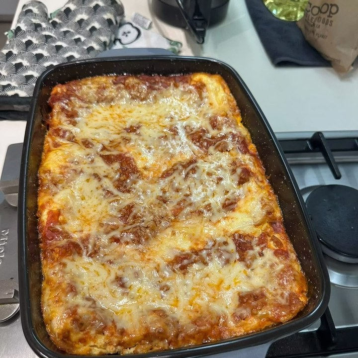
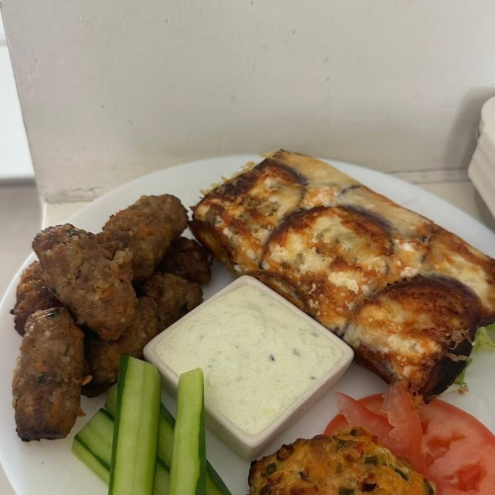
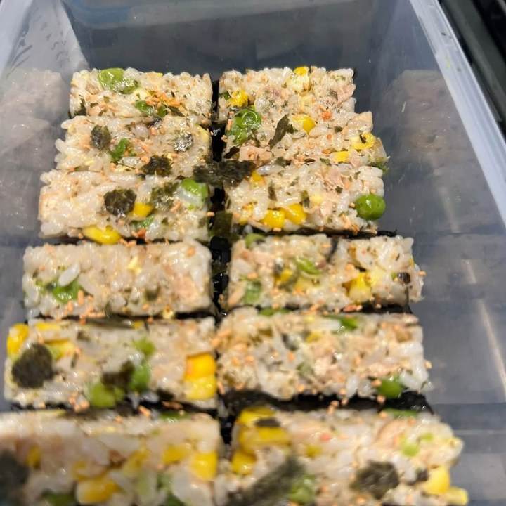
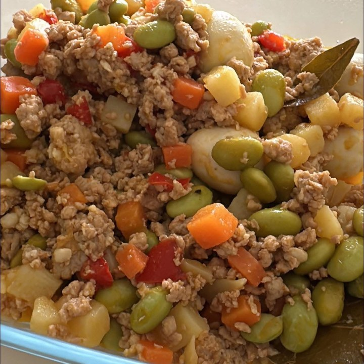
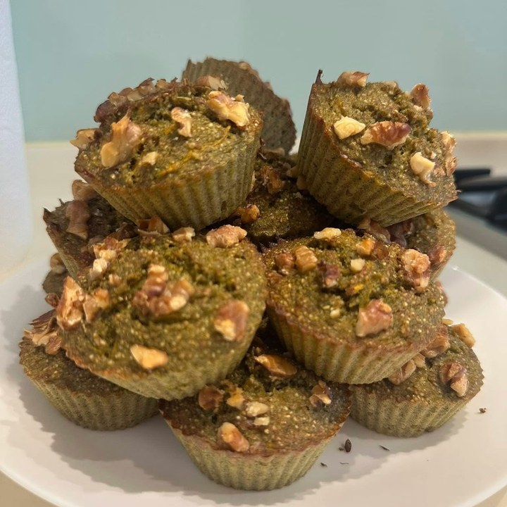
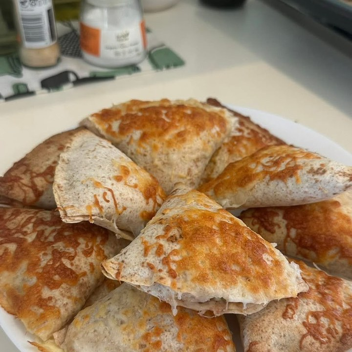
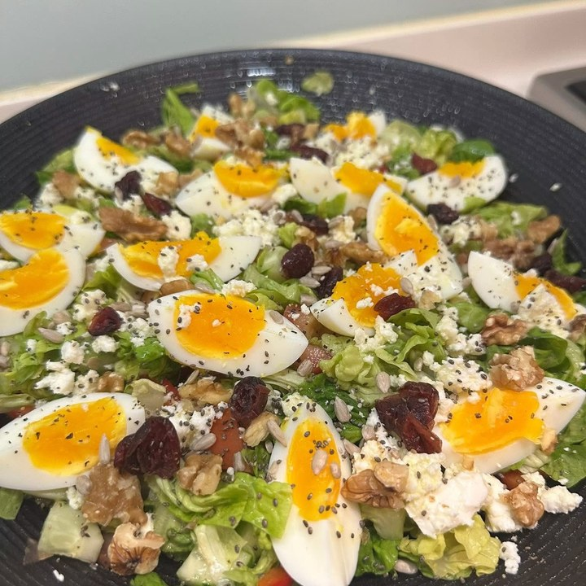

Filipino · 43 · Children, cooking & household
Four years with one family, and a written reference when they left Singapore. Eleven years here across four households, children from toddlers to nine-year-olds, and cooking across Asian, Western and Filipino food.
“Over the last four years, Princess has demonstrated outstanding performance. She performs her duties in a very discreet way but is always smiling and cheerful. Princess is reliable, well organised and can adapt to different situations.”
— Jingyi, her employer from 2020 to 2025
Trust signals
Our strongest trust signal — a family she worked for, recommending her directly. The letter is from the household she was with until 2025, not the family she is with now. We arrange the call once a family has met her and is proceeding seriously.
At a glance
The essentials
Available from
Transfer within Singapore, any time up to 11 December 2026.
Where she is now
Since 2025 — a family of four with a boy of three and a baby of four months. The children, the cooking, the house and the marketing, and the playground and playdates with the older one.
Four years, one family
2020 to 2025 — a boy of five, a girl of nine and a cat. School and extra classes, the cooking and the housekeeping. It ended when the family left Singapore.
Children she has cared for
Boys of three and five, girls of five and nine, and the baby in the house she is in now. She has asked for children of about a year and older — that is the age she works best with.
Cooking
Asian and Western in her employer’s words, and Filipino food at home. Baking too. There are photographs of her cooking further down this page.
Why she is available
A baby was born into the household she joined in 2025 and her work moved from the toddler to the newborn. She would rather be with children of about a year and older, and asked to transfer.
Her own family
Married, with two sons of twelve and twenty in the Philippines.
Best fit
A family with children of about a year upward who want the cooking and the house in the same pair of hands. Toddlers, the school run and after-school classes are all familiar ground.
From Jingyi’s signed letter, written at the end of her four years with the family.
The letter opens plainly: Princess worked with the family for four years, and they were relocating to another country, which is why she needed a new household. “Over the last four years, Princess has demonstrated outstanding performance.”
On how she works in a home: “She performs her duties in a very discreet way but is always smiling and cheerful. Princess is reliable, well organised and can adapt to different situations.” And on language: “Communication is fluid, as Princess speaks excellent English.”
On the children: “She took good care of the kids, making sure they were always safe, taking them to outside activities, and showing patience.”
On the house: “She kept the house clean — cleaning, ironing, doing laundry, dishwashing. She followed instructions and was able to take initiatives to perform household chores in a very satisfactory manner.”
And on the cooking: “She has excellent cooking skills, mostly for Asian and Western food, but is also able to follow any new recipe.” The letter ends: “I recommend her to anyone looking for a new helper.”
Four households in Singapore since 2015.
2015 to 2017 — two years. A Filipino-Chinese family of four, with girls of nine and five. The school run, the cooking, the house and the marketing.
2017 to 2020 — three years. An Italian father on his own with a boy of three. Feeding and bathing him, taking him to school, playing with him, bedtime stories and getting him to sleep — and the cooking, the baking and the house.
2020 to 2025 — four years. A French family with a boy of five, a girl of nine and a cat. School and extra classes, time with the children, the cooking and the housekeeping, and the cat. It ended when the family relocated out of Singapore. This is the household that wrote her reference.
2025 to now. A Chinese-Armenian family of four, with a boy of three and a baby of four months. The children, the cooking, the general cleaning and the marketing, and the playground and playdates with the older boy. She was taken on for the toddler, and when the baby arrived most of her day moved to the newborn. She has asked to transfer to a household with children of about a year and older.
Where she’d suit next. A family with children of about a year and older. She has had a three-year-old twice over, and in her last household she ran the school and tuition runs for two older children. She cooks across Asian, Western and Filipino food, and she is comfortable with a cat in the house. A household hiring for a newborn is not the right fit for her.
Her written reference and her full work history are available to interested families, with her consent.
Her own photographs, from the households she has cooked for.







Tell us a little about your household and we’ll be in touch within 1–2 business days. We’ll only move forward if it feels like a genuine fit.